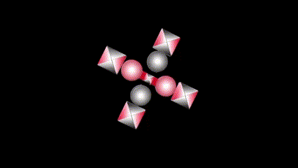

Economic Reality
∞ ⋈ ∞ ∞ ⋈ ∞ ∞ ⋈ ∞
First published: 31 December 2024
1. MINIMUM PROFIT, INSURANCE AND CAPITAL
Currently maximum profit supports the insurance industry, because the super rich are the "names" underwriting all insurance ultimately. The insurance industry is capitalism's answer for communism's state control of disasters.
How will a system of minimum profit handle disaster management? In capitalist economies, disaster management is handled by insurance companies and states. The insurance companies cover small disasters contractually whilst states cover large disasters according to possibility.
2. NIETZSCHE'S UBER MAN
Nietzsche's philosophy did not promote respect for the universal form of the Golden Rule (not-doing evil to others like selves do not
want evil done to). Refer to his book The Antichrist. His philosophy is thus used to promote messianism and post-modernism, with the
consequential criminality and the current breaking up of order.
Goodness is sustainable in group form, supported by a good justice system and borders. Nietzsche argued, evil methodology must be fought
with evil methods. He probably reasoned this way, because of too much emphasis on singularity. He wrote the weak singular "God is dead", but
he seems to have still put too much trust on individual's evil power, not valuing creative group logic. Currently creative group logic
happens with imparting of ideas, whilst sacrificing good individuals each, from whom ideas are imparted. This methodology leaves much room
for improvement.
3. THE LEFT AND THE RIGHT
The economy has a liberal left wing and a conservative right wing. Both sides must function well for success. The liberal side works more with sales and trading. The conservative side is more concerned with manufacturing and service delivery.
During apartheid, the white, brown and black conservative imperialists did not allow the liberal side
self-determination. Therefore, the liberal side and the entire economy failed. South Africa was unable to
sell products, due to sanctions.
At present, the black, brown and white liberal imperialists, do not grant self-determination
to the conservatives, therefore the conservative side of the economy is failing. The electricity dilemma took place,
for example, due to indiscriminate destruction of conservative electricity generation and installations of liberal
new electricity supply.
Liberals and conservatives don't like each other and don't want to work together and live under the same laws.
Partly because of the above, Federal Party SA - FPSA, promotes self-determination of liberals and conservatives in different areas. Therefore, the economy will function well and the metaphorical phoenix's left and right wings will function.
4. COMPREHENDING IPPARTS EXCHANGE's (IPPAEX's) UTILITY
Currently an economic system works as follows. Intelligence networks impart ideas from idea-makers. Money is printed. The imparted ideas and the money are made available to "brothers and sisters" who labour and develop the ideas, whilst idea-makers are excluded from the labour market. The dominant theory for values, is the Labour Theory of Value/Capital. Communists and Capitalists convict in labour's primary role to create value. Ideas are common property due to the dominance of utilitarian philosophy in countries' and the United Nations' human rights. Imparting of ideas, is a human right. The effect of the current reality is, good values (which cause good ideas), are not valued. Honesty and trust, for example, are disrespected via isolating honest people (who form good ideas), with true puzzle pieces in minds. Honest people usually do not have access to capital because of their isolation. Because of religious influences and idolatry, capital, formed, by combining labour with good ideas, is not owned by labourers and idea-makers.
IPPAEX lists brand currencies. Brand currencies function as repositories of intequity (capital of good ideas) and the value of trusted people. Brand currencies are contractually backed by brand values. Moyom (MYM), venture capital, angel money, is used to buy and sell the brand currencies. According to the quantity theory of money, MYM's value in future, will be, the value of all brand currencies, divided by, the number of MYM units.
Intequity is a new word meaning capital of ideas. How can an investor have trust that intequity values, will be represented in brand currencies and MYM? This trust must develop, but, the trust, will basically be found whilst having a connection between brand currencies and trustworthy people. Honery tests, testing honesty, will be relevant, because forming good ideas from true puzzle pieces in minds, is a result of honesty. Copyrights are relevant. A trustworthy person can, for example, have copyrights on a brand image, connected to a brand currency.
5. ABSTRACT VALUES ON IPPARTS EXCHANGE (IPPAEX)
Ipparts Exchange (IPPAEX) lists brand currencies, contractually backed by brand (abstract) values. What are these abstract values?
Brands will compete, using their abstract values, maximising their abstract brand values.
Brands formed in the maximum-profit-charity system, opposing/controlling state governments. Maximum profit companies have brands, working together with non-profit charity companies, also having brands. Both these types of companies can list brand currencies, backed by abstract values, on IPPAEX.
Africahead's brands (also listed on IPPAEX), function for minimum-profit. According to Intequinism (Africahead's philosophy), charity is a responsibility of state governments. Africahead thus, does not cooperate-with/donate-to, non-profit companies. "Individuals" (idea-makers) and labourers, working for brands, will apply good abstract values, forming new brands under the Africahead brand. Africahead's abstract values form from Intequinism, promoting respect for the ideas Truth and Golden Rule (Love) against messianism/idolatry. Part of Intequinism is promoting the idea self-determination, for all groups wanting it, whilst they respect the Golden Rule (reciprocal Not-doing universal evil). Divided Party (DiP) brand tokens, represent the abstract values of self-determination.
6. VIEWS FOR MOYOM (MYM), VENTURE CAPITAL, ANGEL MONEY
Currently “the Creator” are sacrificed whilst “His” ideas are imparted by secretive and esoteric “intelligence” networks. Money is printed and made available with imparted ideas to “brothers and sisters” for development. That is an important part of the current development system.
On Ipparts Exchange (IPPAEX), ideas of inventors will be published shortly after origination and inventors will not be sacrificed in the system. Their ideas will back brand currencies listed on IPPAEX. The brand currencies will be traded with Moyom (MYM), venture capital, angel money. Holders of Moyom (MYM) will thus use MYM in an open economic system. Apart from using MYM to buy and sell brand currencies, MYM will also be used to buy and sell goods, developed out of the ideas of brand currencies.
7. PROFITS OF AN INCOME NATURE AND CAPITAL NATURE
Good business intentions are clear, but, current valuation methodology/theory, does not consider the people with good intentions. Cash flow valuations consider only investors and top management (earning bonuses on maximum cash inflows), who employ others, to develop imparted ideas. Consumers' and salary/wage earners' cash holdings are minimised with current valuation methodology.
On Ipparts Exchange (IPPAEX), goodwill (accounting term) is monetized in new brand currencies. New valuation methodologies and business objectives, considering everyone, are applicable. For example, the objective of Africahead is not maximisation of profits/cash-inflows, of an income nature. The objective is maximisation of the value of each unit, of new money, called Moyom (MYM). Maximisation of the value of MYM must take place via maximisation of brand currencies, bought/sold with MYM. It's complex at first, but considering the difference between maximisation of capital values and maximisation of net income, helps to indicate what i mean.
Cash flow valuations imply maximising cash inflows and maximising net operating income, cause maximisation of capital values, but it is not true.
The objective to maximise net operating income, was replaced with maximising the value of new money and brand currencies at Africahead. I recently realized, clearly, maximising net operating income and maximising capital values, are not the same, even though, cash flow valuations imply it is the same. The difference, not visible in cash flow valuations, exists, basically because of laws. Bad faith is profitable, unless laws prohibit it. Bad faith however is bad for capital values. In China, for example, kickbacks, which caused profits, but damaged capital values, got so bad, they started to give very severe penalties, against kickbacks, because kickbacks caused bad quality goods/products.
8. A NEW-CAPITALIST OBJECTIVE
A new-capitalist objective of Africahead, is, maximizing brand currency values and the value of Moyom (MYM), new money. At present states' economic policy can either be to devalue currency to promote exports, or it can be to make a currency's value appreciate, to favour imports. Moyom (MYM), venture capital angel money of Ipparts Exchange (IPPAEX), will be used to buy/sell brand currencies, contractually backed by brand values. IPPAEX is an Africahead project, filling the funding gap between the time ideas originate and the time current funding happens. This is a new way for brands to raise startup capital. A venture capital community of MYM holders must form, all investing, working and supporting to maximise the value of MYM.
9. A CURRENCY OF ANGELS
Another way to describe Moyom (MYM) utility currency, is calling it an angel currency. Previously, venture capital angels were only the rich. With MYM, anyone, with a little money to risk on Ipparts Exchange (IPPAEX), will be an angel investor.
A currency should not be a technology. A currency is a name, which can be used with different technologies at the same time to serve different peoples. Moyom (MYM) must become the most valuable money in the world. The messed up state of the world made this an objective/idea to work towards. MYM can be bought to raise 125 million USD. The arrangement could be on paper only, to keep the investment safe, excluding the risks of cryptocurrency. This can happen whilst the already issued MYM is traded on cryptocurrency exchanges. Serious developments will start, after a big enough investor sees the value, therefore investing in the big idea.
10. ANGELS' MONEY
Another way to describe Moyom (MYM), is, money of angels. Previously, venture capital angels were only the rich. With MYM, anyone, with a little money to risk on Ipparts Exchange (IPPAEX), will be an angel investor.
Money should not be a technology. Money is a name, which can be used with different technologies at the same time, to serve different peoples. Moyom (MYM) must become the most valuable money in the world. The messed up state of the world made this an objective/idea to work towards.
MYM can be bought for 125 million USD. The arrangement will be on paper only, to keep Moyom safe. The next developments will start, after a big enough investor sees the value, therefore investing in the big idea. Commission, for finding the investors, is 3%, thus, in total 3.75 million USD.
11. PUTTING A VALUE ON A BRAND CURRENCY
On Ipparts Exchange (IPPAEX), many brand currencies will be bought and sold with Moyom (MYM) money. How will brand currencies be valued? A brand currency is an abstract asset.
The dominant valuation methodology, for example, discounting cash flows to a present value (PV), considers only investors and management (receiving bonuses on increasing PVs). Dominant valuation methodology does not consider consumers nor salaried/wage earners, because cash in their pockets must be minimized, according to discounted cash flows.
According to Africahead valuation methodology, minimising profits of an income nature, and maximizing capital profits, will maximize the Africahead brand value. This methodology will maximize cash holdings at consumers and salary/wage earners. It will also maximize investors’ brand values. Values held by investors, bonus-earners, salary/wage earners and consumers, will thus be valued with the same methodology. What will this methodology be? It will develop at Africahead, in time, with new research. It could include consumer metrics, indicating better value-for-money products and services. A crucial matter is finding the balance (maximizing brand value) among investors’, managers', employees’ and customers’ interests.
It is foreseen that Africahead brands, using Africahead’s valuation methodology, will have to compete with other brands using i.e. Present Value (PV) valuations. Therefore thus, IPPAEX, will have to be managed independently from Africahead, by a trust, managing the 125 million USD, raised by selling Moyom (MYM) money, of IPPAEX. Another possibility is that IPPAEX will list only brands, using new valuation methodology. Investors supplying the 125 million USD capital, will influence this decision.
12. THE NEW UTILITY OF MOYOM (MYM) MONEY
In current mainstream maximum profit/charity capitalism, “the Creator is” sacrificed whilst “His” ideas are imparted and developed. No monetary incentive exists to be really creative/honest. People who own most things, are beneficiaries of developed “intelligence” (of networking), imparted to them. It works roughly as follows: An idol is made with the argument, “only god is honest”. Honest people can form true puzzles in their minds from true puzzle pieces in their minds. They are however accused of thinking they each is, the idol returning, and therefore, they each get sacrificed, whilst their ideas are imparted and developed. Idolatry, thus, is a business methodology with its roots in sacrificing honest humans. The singular idol of convictions, makes idolaters blind to all the sacrificing going on. Problems of this system are; criminality, and a funding gap between the times ideas originate and development is funded. Not long ago, this system was overthrown in the East by communism and Marx’s argument that “labour is the creator”, excluding God from all reasoning.
On Ipparts Exchange (IPPAEX) the capitalist system is improved, because “creators” are supported, to be involved with development of their ideas, if they want to. The funding gap, mentioned above, is closed on IPPAEX, because good ideas are captured in brand currencies (soon after the ideas formed), and bought/sold with Moyom (MYM) money. MYM’s utility thus is; supplying capital for development of ideas, without the idolatry, yet with belief in God.
Working happily together depends on agreeing about a value system. Such value systems are different and explained at each brand currency. Different brand currencies, doing different things, compete amongst one another, in an environment, where the different brands agree about what may not be done. IPPAEX will decide with the Moyom (MYM) holder community, what may not be done.
13. PITY
Nietzsche opposed pity as follows:
What good is pity! Is pity not an effect of sacrificing the-good? (1997: 7)
Rousseau promoted pity as follows:
"It is therefore certain that pity is a natural sentiment, ... it is this pity which, instead of that sublime maxim of argumentative justice, Do to others as you would have others do to you, inspires all men with that other maxim of natural goodness a great deal less perfect, but perhaps more useful, Consult your own happiness with as little prejudice as you can to that of others." (2004:21)
NIETZSCHE; F. 1997. Thus Spake Zarathustra. Hertfordshire: Wordsworth Editions Limited.
ROUSSEAU; J. 2004. Discourse on the Origin of Inequality. Mineola: Dover.
14. IDEAS AND LABOR ARE IMPORTANT
Adam Smith favored ideas with his “invisible hand”. Karl Marx favored labour with his words “labour is the creator”.
According to Adam Smith, maximum prices of an income nature, will gradually decrease as competition increases
and new ideas are implemented. The objective however in Adam Smith's world stays maximum profit of an income nature.
The only reason, net operating income, in Smith's world, decreases is because of competition. Marx wanted to
remove profits from the world, especially, profits made out of others' labour. Marx did not value intequity
(capital of ideas) at all. According to Intequinism, Adam Smith's beating around the bush, is not relevant,
and Marx's disrespect of ideas, focusing only on labour, is not relevant. According to Intequinism, prices
and profits of an income nature, are intentionally minimized, maximizing benefits for all.
Moyom (MYM) money of Ipparts Exchange (IPPAEX), supports both ideas and labor.
Without ideas, labor would not exist. Without labor, ideas would not manifest, gradually, as it does.
15. “GOODWILL”
What is goodwill or in another term a brand currency, bought and sold with Moyom (MYM) angel money?
“Goodwill” is an academic accounting word, to name the difference between the going concern value of a business and the equity value of a business. According to International Accounting Standards (IAS), goodwill may not be capitalized unless it was bought. Goodwill thus, shows on balance sheets when whole businesses are bought/sold. The values involved are very big. Think about a business like Apple for example. December 2023, the equity value of Apple was 74 billion USD. The average market capitalisation of Apple during the last 5 years was 2.4 trillion USD. Deducting the equity value from the market capitalisation (going concern value), gives a value for goodwill of 2.3 trillion USD. In this calculation the brand value of Apple is 2.3 trillion USD. It is an abstract asset, which may not be capitalized onto the balance sheet of Apple.
A serious question is, what does this abstract asset consist of. The question cannot currently be definitively answered, because of the way it is calculated, simply deducting one figure from another. On Ipparts Exchange (IPPAEX) this question will be studied and comprehension about what the abstract assets of companies consist of, will expand, because the market will place a value on it, in a new way.
According to the economic theory of Intequinism, much of this value, formed from the original ideas for Apple, which existed at the start of the Apple company. Thus, when Apple started, more businesses could have sold part of this goodwill (brand value) to raise capital, to develop businesses. However, at the time an exchange did not exist where businesses could monetize its goodwill. According to John Barlow, perhaps, the idea, which made micro processors possible originated in South East Asia. The idea was further developed in the Netherlands, where the only company, which manufactures microprocessor manufacturing equipment exists. If Ipparts Exchange (IPPAEX) existed at the time, maybe other businesses could also have raised capital, to develop relevant ideas, and today, the world could have been in a better state.
Ipparts Exchange (IPPAEX) is a new exchange where businesses can sell a part of their goodwill, to raise capital, to develop their ideas further.
16. WHAT IS MINIMUM PROFIT?
Minimum profit refers to profits of an income nature. Capital profits must always be maximised because capital profits imply a more beautiful world.
First of all, minimum profit is not maximum profit. The amounts can be the same, but the intentions differ. At a small business, minimum and maximum profit are usually the same amount. Minimum profit is more often relevant at service delivery where service providers work closely with clients. Maximum profit is often relevant at trading, where suppliers are removed from customers.
One of the reasons, maximum profit, as an objective, has become toxic is; most business is done remotely not personally. When a fee is asked, in the presence of a client, it’s different from asking a price away from a client. It is easier to charge a maximum price, when direct communication between a supplier and customer does not apply.
Minimum profit includes enough profit to have a fulfilling life for self.
The main difference between minimum and maximum profit is; minimum profit excludes charity, later, out of profits, because charity, is a state’s responsibility. Making maximum profit and finding pleasure in pitying others with charity, and a feeling of superiority, is a different outlook in life than making minimum profit, intentionally leaving part of the cake for others, getting state government, with good social services, in place.